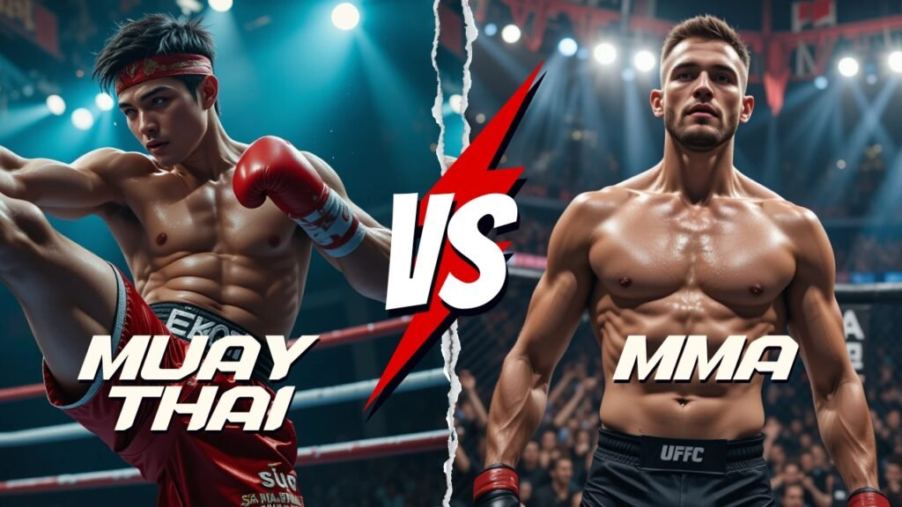
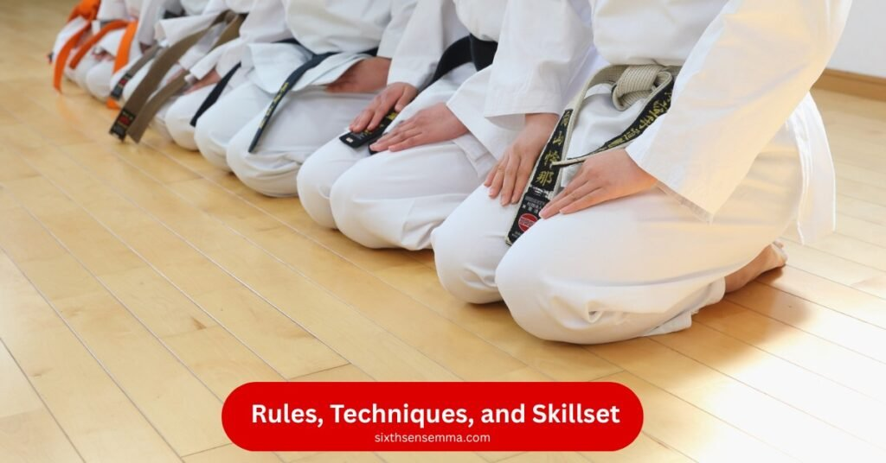
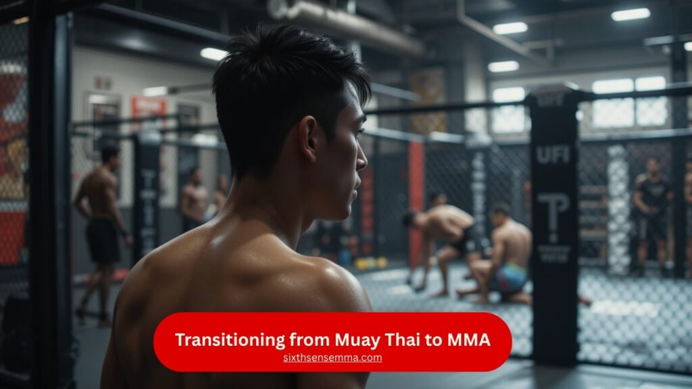

Muay Thai vs MMA which one builds better fighting skills

Muay Thai vs MMA is a common debate among combat sport enthusiasts. Muay Thai is a traditional striking martial art from Thailand that uses punches, kicks, elbows, and knees. It’s known for its power and cultural depth. MMA (Mixed Martial Arts) is a modern combat sport that blends multiple fighting styles, including striking and grappling, for a well, rounded approach in competitive fighting.
Traditional Roots and Cultural Background
Muay Thai and MMA may seem similar in practice, but their cultural roots and history are quite different Muay Thai began as a battlefield martial art in Thailand, where it has deep traditional roots. It evolved into a national sport and cultural pride, focusing on powerful strikes and a spiritual connection.
| Aspect | Muay Thai | MMA (Mixed Martial Arts) |
|---|---|---|
| Origin | Ancient battlefield martial art from Thailand | Modern sport combining multiple martial arts |
| Cultural Importance | Deeply tied to Thai tradition and national identity | Focused on competitive performance across global platforms |
| Spiritual Practices | Wai Kru ritual before fights, respect to teachers and culture | No specific rituals; training is performance, and skill,based |
| Focus | Powerful striking and spiritual discipline | Adaptability, mixed skills, and strategic versatility |
| Evolution | Evolved from military defense to traditional combat sport | Evolved from early no,rules fights to organized global sport. |
From Basics to Pro Level, Sixth Sense MMA Has You Covered
At Sixth Sense MMA, we stay true to the roots of Muay Thai, respecting its rich tradition and cultural spirit, while also embracing the fast-paced world of Mixed Martial Arts (MMA). Our training combines the power and discipline of ancient Thai techniques with the versatility of modern combat. Whether you’re a beginner or an experienced fighter, we focus on building real skills with purpose, respect, and heart. At Sixth Sense MMA, you’re not just training, you’re becoming a complete martial artist.
Muay Thai vs MMA – Differences
Muay Thai and MMA are often confused or used interchangeably, especially by people new to combat sports. Muay Thai is focused on striking using elbows, punches, knees, and kicks, making it a single martial art,that’s the main difference..
| Feature/Aspect | Muay Thai | MMA (Mixed Martial Arts) |
|---|---|---|
| Type | Single martial system | Combination of various combat styles |
| Focus | Stand,up striking | Striking, grappling, and submission fighting |
| Techniques Used | Elbows, knees, punches, kicks | Wrestling, jiu,jitsu, kickboxing, boxing |
| Flexibility | Limited in diverse combat formats | Adaptable in various fight scenarios |
| Training Scope | Structured and traditional | Diverse and tactical |
Rules, Techniques, and Skills (Muay Thai vs MMA)
Muay Thai and MMA differ significantly in their rules, techniques, and overall fighting strategies. While Muay Thai sticks to a focused, traditional striking approach, MMA blends multiple martial arts, offering more flexibility and dynamic combat options. These differences shape how each sport is practiced, promoted, and understood around the world.

1. Fighting Style and Techniques Allowed
Muay Thai is centered around a disciplined stand,up style, using the body’s natural weapons like elbows, knees, fists, and shins. It emphasizes rhythm, timing, and raw striking power. MMA, however, goes beyond striking by adding ground fighting and grappling, allowing fighters to switch between various styles in a single bout.
Muay Thai
- Purely striking,based approach
- Uses elbows, knees, punches, and kicks
- Clinch fighting with controlled sweeps
MMA
- Combines striking and ground techniques
- Includes wrestling, Brazilian jiu,jitsu, and submissions
- Fighters adapt to all phases of combat
2. Rules and Skillset Focus
The rules in Muay Thai are traditional, often tied to cultural customs, and emphasize respectful conduct. Fighters are trained to be precise and endure long stand,up battles. MMA uses a unified ruleset developed by athletic commissions, which governs all aspects of combat, including ground control. MMA fighters train across disciplines, focusing on transition, adaptability, and all,around skills.
Muay Thai
- Governed by traditional Thai rules
- Focuses on endurance, rhythm, and striking accuracy
- Emphasis on spiritual respect and form
MMA
- Regulated under Unified Rules of MMA
- Fighters develop cross-discipline skills
- Strong focus on timing, transition, and strategy
3. Organizations and Entertainment Value
Muay Thai remains primarily popular in Thailand and nearby regions, with smaller promotions highlighting cultural and technical value. In contrast, MMA has become a global sport led by major promotions like the UFC, drawing large audiences through mainstream events and media presence. The evolution of MMA has made it a leading sport in modern combat entertainment.
Muay Thai
- Promoted mainly through local Thai organizations
- Retains a cultural and spiritual connection
- Shows emphasize tradition and discipline
MMA
- Global presence through UFC, Bellator, ONE Championship, and others
- Built for international entertainment and mass appeal
- Continuously evolves by integrating new styles
Strengths and Limitations of Each Style
When looking at MMA and its different organizations, it’s clear that fighters today have more chances to compete at high levels. UFC is the most recognized name, but other influential organizations like PFL (Professional Fighters League), Bellator, and One Championship also play a big role in the sport. These platforms enable fighters from all over the world to show their skills and grow. Though UFC gets the most attention,
| Aspect | MMA | Muay Thai |
|---|---|---|
| Competition Platforms | Multiple international organizations (UFC, PFL, Bellator, One) | Fewer global promotions, mostly in Thailand and select countries |
| Fighting Techniques | Includes striking, grappling, submissions, wrestling | Primarily striking: elbows, knees, kicks, punches |
| Adaptability | High adaptability to different opponents and situations | Best for stand,up, limited ground defense |
| Career Opportunities | Broader reach and sponsorship options | Strong in niche markets, culturally rich but more focused |
| Training Focus | Multi,disciplinary (BJJ, wrestling, boxing, etc.) | Focused on precision, discipline, and powerful striking |
Transitioning from Muay Thai to MMA
Moving from Muay Thai to MMA is a big step that many fighters consider when they want to grow their skills. While Muay Thai focuses on powerful strikes, elbows, and knees, mixed martial arts includes many other disciplines like Brazilian jiu, jitsu and wrestling. You need a lot of training in both attack and defense to be successful in MMA.

| Combat Element | Muay Thai Focus | MMA Requirements |
|---|---|---|
| Striking | Elbows, knees, punches, and kicks | Integrated with takedown setups and counters |
| Grappling | Minimal | Crucial for clinch control, takedowns, submissions |
| Ground Game | Not practiced | Essential for offense and defense on the mat |
| Defense | Against strikes | Against both strikes and takedowns |
| Fight Strategy | Stand,up control | Adapting between phases: stand,up, clinch, ground |
New Skills to Learn
Transitioning from Muay Thai to MMA demands more than just elite striking ability. While Muay Thai equips fighters with powerful stand,up techniques,like sharp elbows, precise kicks, and devastating knees,MMA introduces a new layer of complexity. In the cage, relying solely on striking won’t be enough. To succeed, fighters must learn key grappling skills such as takedown defense, submissions, and ground control. These abilities help manage fights in all phases,standing, clinching, or on the ground,and are essential for becoming a complete mixed martial artist.
New Skills to Learn (Bullet Points)
- Takedown Defense
- Takedown Offense
- Grappling Techniques
- Submission Escapes
- Ground Positioning
- Cage Control
Common Challenges for Strikers
Strikers transitioning from Muay Thai to MMA often encounter serious challenges that test their adaptability. While Muay Thai is a powerful and respected striking art focused on stand, up combat, MMA demands a more well, rounded skill set. Fighters must adjust to varying ranges, ground fighting, and new defensive strategies. The shift from a striking, only mindset to one that includes grappling, submissions, and takedown awareness can be overwhelming. Understanding and mastering these new aspects is essential for success inside the MMA cage.
Common Challenges for Strikers:
- Adapting from close, range striking to multi, phase combat (stand, up, clinch, ground)
- Learning and applying takedown defense and ground escapes
- Transitioning from limb, based striking to full, body combat strategies
- Developing a functional ground game and submission awareness
- Handling the mental and physical demands of grappling, heavy training systems like BJJ and wrestling
MMA and UFC – Are They the Same?
Many people confuse MMA (Mixed Martial Arts) with the UFC (Ultimate Fighting Championship), but they are not the same. MMA is a full, contact combat sport that blends techniques from various martial arts like Muay Thai, boxing, Brazilian jiu, jitsu, and wrestling. It’s a global sport practiced by fighters worldwide. On the other hand, the UFC is an American organization founded in 1993 that promotes and hosts MMA fights. While MMA is the sport itself, the UFC is just one of the major companies within it, known for showcasing some of the world’s top MMA athletes.
UFC’s Role in Popularizing MMA
In contrast to traditional Muay Thai, which is a sport with deep roots and a rich cultural history, UFC brought a new level of excitement to modern combat. While Muay Thai can be traced back to the 18th century and is characterized by knees, elbows, punches, and kicks, UFC allowed fighters to apply techniques from many styles. It turned simple boxing or cardio training into an intense fitness test, where ducking, slips, feints, and smart movement became just as important.
Why Choose Sixth Sense MMA for training
Muay Thai vs MMA, we specialize in helping fighters understand, compare, and grow within both martial arts. Our platform offers real, world insights, structured guides, and expert training tips based on authentic experience in both fields. Whether you’re drawn to the tradition and intensity of Muay Thai or the versatility and challenge of MMA, we break down the pros and cons so you can make an informed decision. Choose us for accurate knowledge, clear direction, and a community that supports your fighting passion.
| Combat Element | Description |
|---|---|
| Back Control | Grappling from behind the opponent |
| Ground Combat | Fighting on the mat using holds & submissions |
| Stand, up Attacks | Strikes from a standing position |
Muay Thai vs Thai Boxing – Any Real Difference?
The main point of conflict in Thai boxing and Muay Thai is speech. Both refer to the same combat sport, so the difference depends on personal preference. Whether you train in one or the other, the goals and techniques are the same.
| Term Used | Meaning | Key Difference |
|---|---|---|
| Muay Thai | Traditional Thai combat sport | Rooted in Thai language/culture |
| Thai Boxing | English term for Muay Thai | More common in Western usage |
| Practical Use | Identical | No difference in training style |
Training Focus and Strategy
Muay Thai training is highly structured and rooted in repetition. Fighters follow intense daily routines like pad work, heavy bag sessions, and controlled sparring to sharpen their striking accuracy and physical conditioning. This style of training builds not only technical skill but also mental toughness, demanding consistent effort, focus, and discipline. Every session challenges a fighter’s endurance and commitment, making it a full, body test of strength, willpower, and precision.
Key Focus Areas in Muay Thai Training:
- Pad work for timing and technique
- Heavy bag training for power and endurance
- Sparring to apply skills in real, time scenarios
- Conditioning drills to build stamina and strength
- Strict discipline and repetition for mastery
- Mental toughness and daily commitment
Choosing Based on Personal Goals
Choosing between Muay Thai and MMA depends on what your personal goals are. Muay Thai focuses on stand, up combat, measured techniques, and the effectiveness of every punch and strike. It is compared to boxing but includes more tools, making it ideal for individuals who want a specific and disciplined fighting style.
Bonus Comparison: Boxing vs Kickboxing
Boxing is a focused striking discipline that trains fighters in punches, footwork, and head movement. It develops quick hand speed, precise timing, and strong defensive reflexes, especially in close, range combat. Kickboxing, on the other hand, expands the striking game by adding powerful kicks to punches, offering a more diverse offensive and defensive strategy.
This blend of upper and lower body techniques allows kickboxers to control distance, vary attacks, and create unpredictable fight patterns. Both sports are highly effective, but kickboxing provides a broader striking arsenal compared to the refined hand techniques of boxing.
Differences Between Boxing and Kickboxing:
- Boxing uses only punches; kickboxing uses punches and kicks
- Boxing focuses on close, range control; kickboxing covers all striking ranges
- Footwork and head movement are crucial in boxing
- Kickboxing includes leg kicks, body kicks, and knee strikes
- Boxing builds strong upper body defense; kickboxing trains full, body defense
- Kickboxing is more versatile, while boxing offers sharper hand techniques
Contact Us
Still deciding between Muay Thai or MMA? Let our experts help. Whether you’re just starting or switching styles, reach out now for personalized guidance and take the first step in your fight journey.
👉 Start Here – Contact Our Team
Benefits of Choosing the Right Style
Choosing between Muay Thai and MMA isn’t just about technique, it’s about aligning with your personal strengths, goals, and mindset. Muay Thai provides deep cultural roots, powerful striking, and spiritual focus, while MMA gives you a full, spectrum combat skill set. Knowing the difference helps you train smarter, improve faster, and compete with clarity. The right style saves time, enhances performance, and builds confidence in every round.
Conclusion
Choosing between Muay Thai and MMA depends on what your goals are in the fight world. If you enjoy striking, strong techniques, and a more traditional feel with powerful kicks, then Muay Thai might be right for you. But if you’re someone who wants to train in grappling, submission, and a mix of fighting skills, MMA gives a broader range of combat experience.
From what I’ve seen and practiced, both require real discipline, serious conditioning, and mental focus. It’s not just about strength, but about matching your training to your personal objectives. The right style is the one that keeps you motivated and fits your purpose in this sport.
FAQ’s
Muay Thai is a traditional striking martial art from Thailand focusing on punches, kicks, elbows, and knees. MMA (Mixed Martial Arts) blends multiple combat styles, including striking, grappling, and submissions, for a more versatile fighting approach.
MMA offers a more well-rounded skill set for self-defense as it combines stand-up striking, ground control, and grappling. Muay Thai is powerful in close-range striking but lacks ground techniques needed in many real-life scenarios.
Yes. Muay Thai has deep cultural and spiritual roots in Thailand, with rituals like Wai Kru and respect-based training. MMA is a modern sport focused on global competition and performance-based outcomes.
Absolutely. Many MMA fighters use Muay Thai techniques for striking, especially elbows, knees, and clinch control. However, MMA also includes wrestling, Brazilian Jiu-Jitsu, and other disciplines.
MMA builds more complete fighting skills by covering striking, grappling, submissions, and cage control. Muay Thai excels in striking but lacks ground and submission training.
Both require discipline, but Muay Thai places more emphasis on tradition, respect, and repetitive training methods. MMA is more tactical and performance-focused across varied disciplines.
Muay Thai fighters have a strong striking base but need to learn grappling, takedown defense, and ground techniques to succeed in MMA. The transition is possible but requires dedicated cross-training.
Both are excellent for fitness and building mental toughness. Muay Thai emphasizes conditioning, precision, and repetition. MMA adds versatility, pressure adaptation, and multi-skill integration.
Train with us in Coppell
The first class is free. Shorts, a t-shirt and a water bottle. We lend the rest.
Book a free class